Технический анализ
О таинственном «техническом анализе» новички, как правило, узнают лишь после многократной потери своих депозитов и после перехода на 2й уровень трейдинга. С этого момента начинается увлекательнейший этап жизни, в котором годы будут пролетать, как минуты.
Что же это за «техника» такая, почему ее надо анализировать? Это метод анализа графиков? Как же он работает?
Тут будет жирное предупреждение. Это очень большая статья, огромная. Это по сути справочник всего технического анализа в одном месте. Ее размер — необозрим.
Что такое технический анализ
Что же это за техническая такая штука? Это такой способ прогнозировать движение цены. Причем, и это просто замечательно — абсолютно любой цены. И даже больше — любого графика в мире. Этим методом даже можно успешно прогнозировать… температуру воздуха и делать самому погодные прогнозы. И нет, это не шутка.
Но основное применение технического анализа — это, безусловно, рынки и только они. Именно под них эту технологию и придумали. Вот уже несколько сотен лет именно благодаря ему миллионы трейдеров делают умный вид и пытаются понять, куда же направится цена.
А как иначе? Если ты торговец рисом на древней бирже, то тебе нужен способ спрогнозировать, когда можно поживиться, а когда рынок следует обойти стороной. И не важно, что вокруг 18 век, туалет на улице, а до изобретения телефона еще 200 лет.
Первое же препятствие – слово “технический”, часто отпугивает. Название весьма неудачное. Ибо когда ты копаешься под капотом авто, разве это не менее “технический анализ” определенного механизма? Он самый и есть.
Но с техническим анализом в рыночных ставках, форексе или на рынке акций все иначе. Здесь аналитик работает с движением цены по графику и учится находить все необходимые закономерности этого процесса.
На Западе их также называют чартистами, от слова “chart” – график. В общем, замените слово “технический” на “графический” и будет менее страшно.
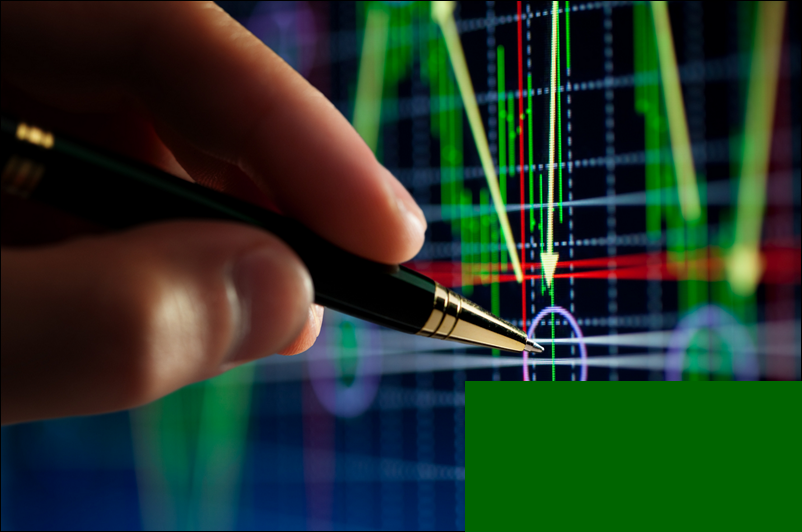
Почему вообще технический анализ работает? Как черточки на графике способны определить движение цены? Все, что есть на графике – это лишь баланс спроса и предложения. Когда спрос сильно превышает предложение, или наоборот, начинается тренд.
Другими словами, в техническом анализе мы занимаемся ничем иным, как изучением жизни рынка, его эмоционального состояния, оптимизма и пессимизма трейдеров.
Так что технический можно смело заменить на “поведенческий”, “графический” или даже “эмоциональный”. А того, кто придумал “техническим” пугать новичков, надо отшлепать.
История технического анализа
Это куда более старая штука, чем вы можете себе представить. Скажем, некоторые положения теханализа разрабатывались Жозефом де ла Вега в 17 веке, для торговли на голландских рынках.
В 18 веке Хомма Мунэхиса, японский торговец рисом, разработал то, что впоследствии стало современными японскими свечами. Только представьте себе – эти свечи работают уже более 200 лет.
В 1920х годах Ричард Шабакер выпустил несколько книг по техническому анализу, в которых получили свое развитие труды Чарльза Доу и Питера Гамильтона в их книгах “Теория фондового рынка” и “Технический анализ рынков”.
Наконец, в 1948 году Роберт Эдвардс и Джон Маги выпустили легендарную книгу “Технический анализ трендов на фондовом рынке” (Technical Analysis of Stock Trends), которая переиздается до сих пор издательством Amacom и заняла самое почетное место в моей электронной библиотеке.
Ранний технический анализ был основан исключительно на графических методах, поскольку с компьютерами и статистикой был, мягко говоря, напряг. А Чарльз Доу – тот вообще начинал с графиков типа “крестики-нолики”.
В конце 19 века Чарльз Доу разработал то, что потом назвали “Теорией Доу” и что стало основой для современного технического анализа. Теория Доу работает до сих пор, как и в первый день. Ральф Нельсон Эллиот, Вильям Ганн, Ричард Викофф – все эти ребята в начале 20го века создавали то, что используется до сих пор. За прошедшие десятки лет появилось множество новых технических инструментов и теорий, ибо компьютерные технологии совершили невероятный скачок вперед.
Основы технического анализа
Технический анализ очень многогранен. Это графики и модели, технические индикаторы и осцилляторы, комбинация различных приемов и методов. Это данные по объемам. Но во всем его разнообразии, есть всего три ключевых постулата:
- все факторы, влияющие на цену, уже заложены в график;
- цена всегда движется в трендах;
- история повторяется.
Давайте по ним пробежимся.
В цене заложено все
В цене и ее движении, что мы видим на графике, уже заложены все факторы, что на нее повлияли.
Именно поэтому можно предсказать движение цены FB (акций Facebook) не имея ни малейшего понятия о том, какое экономическое состояние компании, ее баланс, какие у нее финансовые показатели.
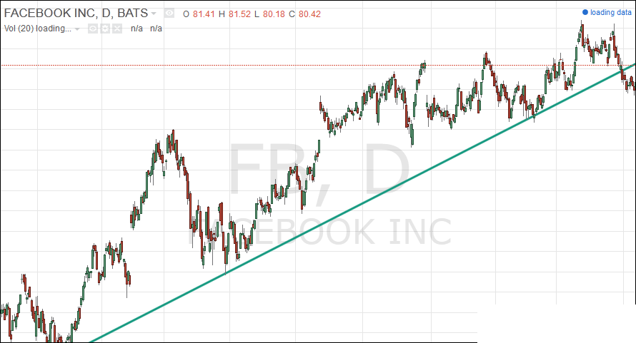
По факту, в цене заложено соотношение спроса и предложения на определенный актив, будь-то акция или валютная пара – и этого техническому аналитику, казалось бы, достаточно.
Тем не менее, надо стремится к универсальности. Методы важно комбинировать. Лезть в глубины фундаментального анализа не обязательно, но знать, какие важные новости выходят сегодня – надо.
Именно для этого используются разные экономические календари. Один из них расположен у меня под живым графиком. Новости с “тремя головами” обычно дают рынку импульс, который предугадать “голым” теханализом очень сложно.
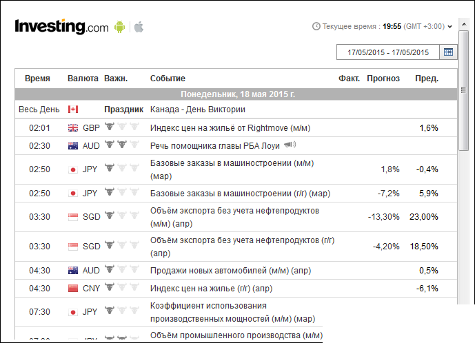
Цена идет в трендах
Второй важный аспект. Цена, так или иначе, всегда движется в определенном, явном направлении – тренде. Именно на трендах зарабатывают деньги. Именно поэтому все эти пословицы в книгах вроде “тренд ваш друг” и т.д.
На трендах основано подавляющее большинство стратегий. При этом каждый тренд состоит из маленьких микротрендиков. Но об этом мы подробнее поговорим чуть позже.
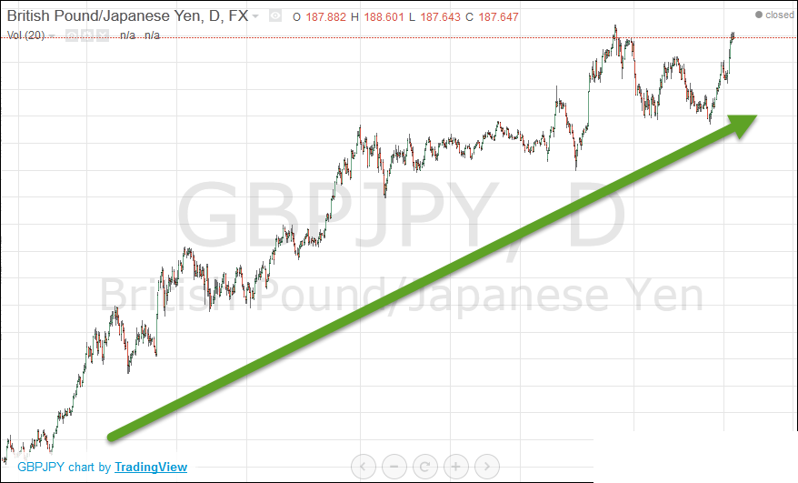
История повторяется
То, что случилось ранее, случится вновь. Именно поэтому работают свечные модели и модели разворотов. Цена имеет цикличную природу, поскольку участники рынка имеют схожую психологию и повторяют свои действия, раз за разом.
Вот почему работают многие модели, что были разработаны в седую старину. Скажем, вот этой модели разворота тренда “W” больше 100 лет – а скриншот сделан несколько дней назад. Вот такая машина времени.
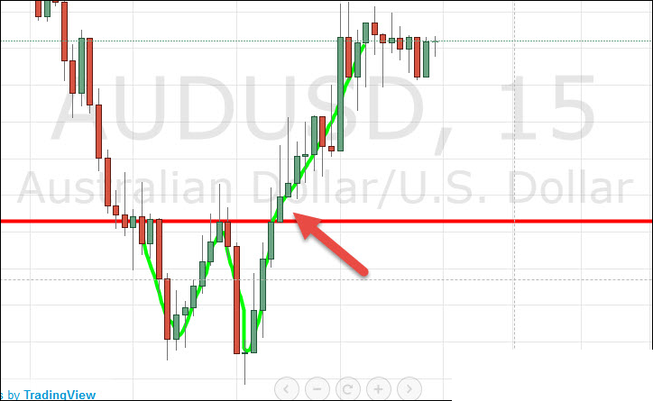
Активы
Технический анализ работает для любых активов (пример):
- валютных пар (EUR/USD);
- акций (AAPL);
- индексов (S&P 500);
- фьючерсов (CL);
- cырья (UKOIL).
И так далее. Достаточно при выборе актива на живом графике посмотреть на это меню. Графики и технический анализ работают для чего угодно.
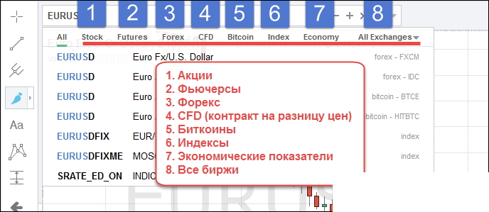
Анализ технический или фундаментальный
Есть 2 школы анализа рынков – техническая и фундаментальная. Хотя и попадаются курьезы вроде, мама помоги, “астротрейдинга” (торговля по фазам луны; нет-нет, я даже не шучу). Адепты этих методов любят поспорить, но, в действительности, для удачного прогноза надо дружить с обоими.
В техническом анализе решает только движение цены. То, как она движется, с какой скоростью и амплитудой, каков импульс ее роста или падения, какие свечи при этом формируются и так далее.
Фундаментальщики обожают экономические факторы. В случае акций, это баланс компании, баланс оборотных средств (движение денежек в компанию и из нее, он же cash flow), отчеты о прибылях и убытках и тому подобное.
При фундаментальном анализе предпочитают большие таймфреймы, порой и на год. В техническом же анализе можно успешно работать даже на минутном графике.
Для нас, в бинарных опционах, технический анализ с добавлением фундаментального – то, что доктор прописал. Работаем по канонам технического анализа, просматриваем важные новости и этого будет вполне достаточно.
Тренды
Основа основ технического анализа – тренд. Это движение цены в определенном направлении.
Тренд вверх:
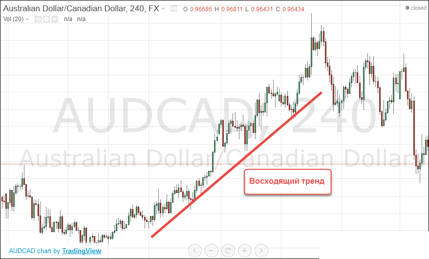
Тренд вниз:
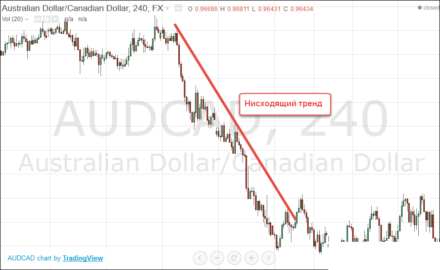
Между трендами цена любит отдыхать в боковом движении, когда тренд, как таковой, отсутствует:
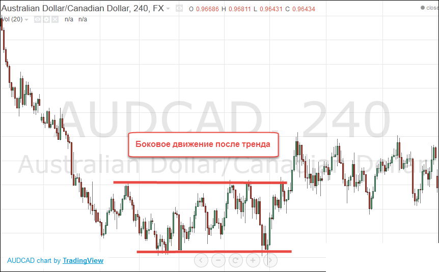
Волнообразные тренды
К сожалению, если бы тренды были прямыми, как стрела, зарабатывать смогла бы и ваша кошка. Однако, тренды крайне редко идут прямолинейно. Обычно это сочетание наивысших и низших уровней, из которых тренд и состоит.
Скажем, тренд вверх нередко можно разложить на такие микро-волны:
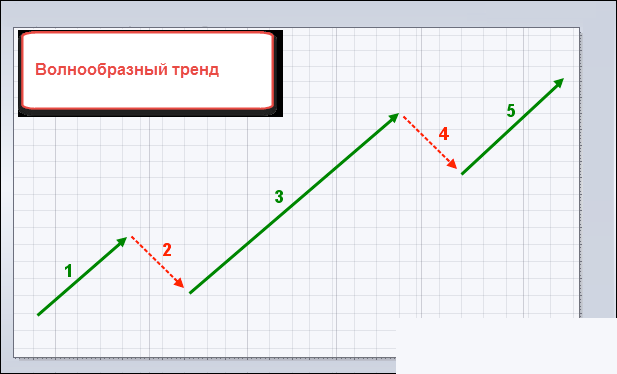
При этом в реальности волны, конечно, не такие красивые, как на схеме, а в ровном красивом тренде цена движется редко (хотя, порой, и случается).
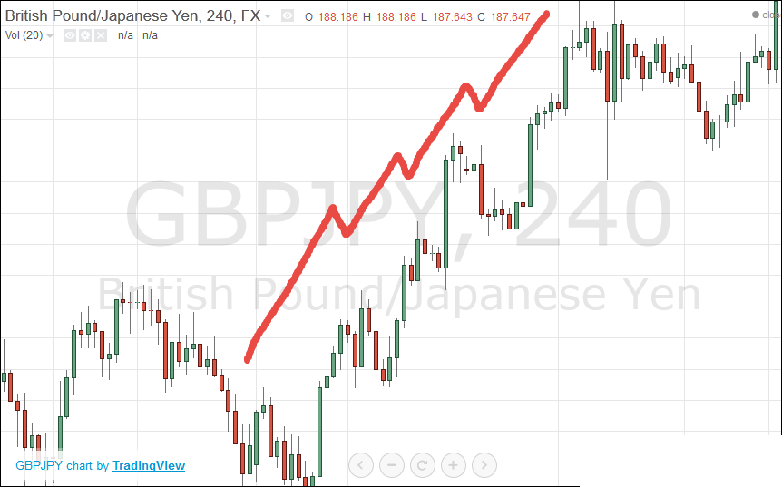
Длительность тренда
Все тренды можно разделить на:
- краткосрочные;
- среднесрочные;
- долгосрочные.
Чтобы определить длительность тренда, нужно использовать старшие таймфреймы. В классической теории тренды делятся на годовые, месячные и дневные. Но это актуально, в целом, для торговли акциями.
В бинарных же опционах, как правило, нам достаточно:
- определить долгосрочный тренд на 1-дневном графике;
- среднесрочные будут на 1-4 часах;
- краткосрочные на 1-5 и 15 минутах.
Таким образом, мы и наблюдаем картину маслом, когда один долгосрочный тренд состоит из нескольких средне- и краткосрочных.
В этом часто заключается ошибка новичков. Они ставят один фрейм, вроде 5 минут, определяют тренды, но забывают определить средне- и долгосрочные тренды. А потом удивляются, почему это цена вдруг на 5-минутном развернулась. Да потому, на другом фрейме картина выглядит иначе.
Скажем, что вы видите на этих 5 минутах? Цена, как ненормальная, падает вниз после бокового движения? Безусловно.
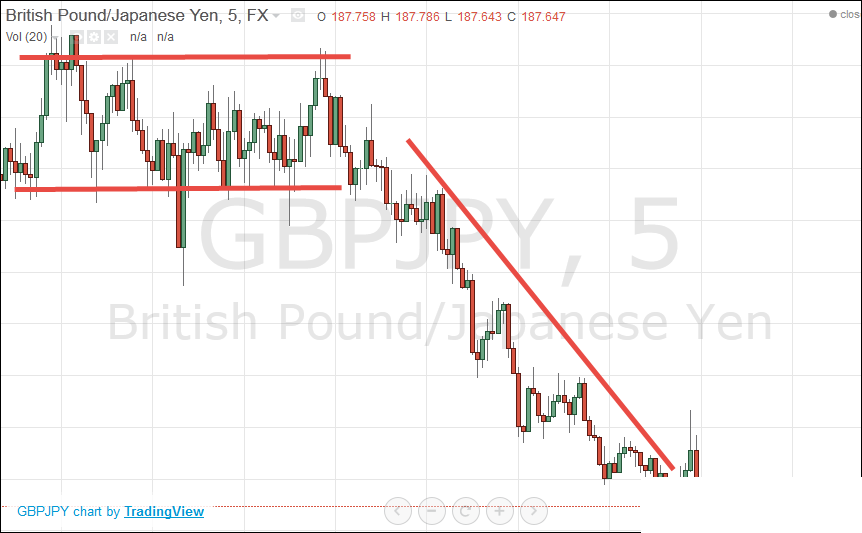
Однако, давайте посмотрим на эту же пару на 4 часах.
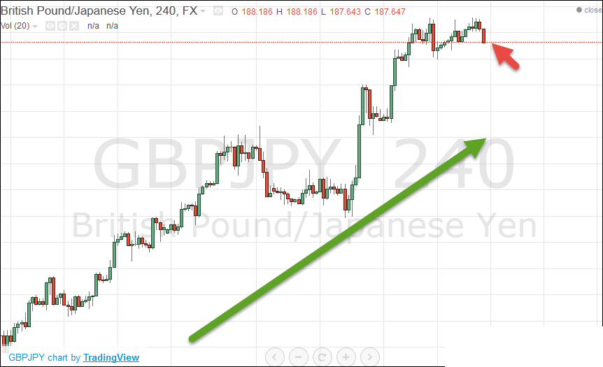
Оказывается, наш “устойчивый тренд вниз” на 5 минутах – это всего лишь одна красная свеча. А тренд, средне- и долгосрочный, уже несколько недель идет вверх. Следовательно, наш 5-минутный “трендик” – временный и недолговечный.
Линии трендов
Это простая и эффективная техника определения трендов. Достаточно прочертить линию по максимальным свечам, чтобы определить дальнейшее поведение цены. Линии трендов помогают определить не только тренд, но и его разворот.
Для тренда вниз линия чертится вверху:
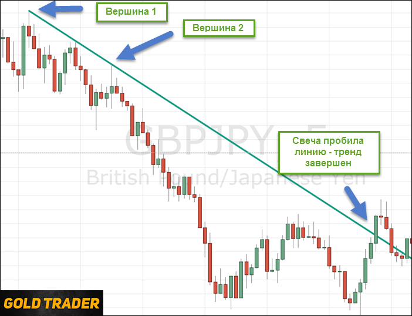
Для тренда вверх, соответственно, линия рисуется внизу:
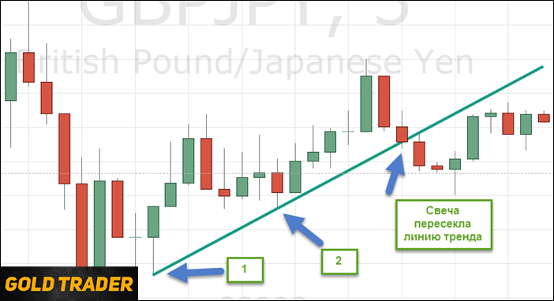
Поведение цены сразу становится более упорядоченным. Она или отскочит от следующего касания с линией, либо же пробьет ее, после чего тренд можно считать завершенным.
Каналы
Канал – это развитие идеи линии трендов, весьма популярная. Цены часто идут в таких каналах и дают нам массу возможностей для торговли.
Канал может идти вверх, вниз или быть горизонтальным флетом (самое вкусное). Торги в канале ведутся до тех пор, пока цена его не пробьет.
Преимуществ масса – сразу видно направление тренда, стенки канала выступают точками “отскока” цены, в общем, все довольны.
Обратите внимание на тени свечей – они подсказывают, где в канале лучше всего войти.
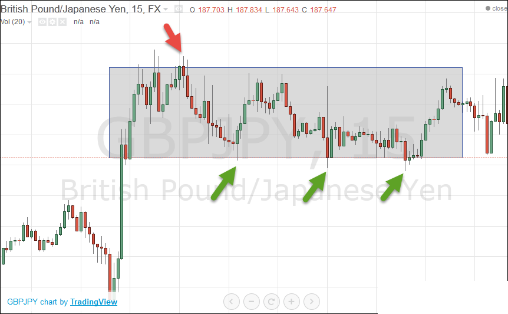
Использовать канал можно и нужно по тренду.
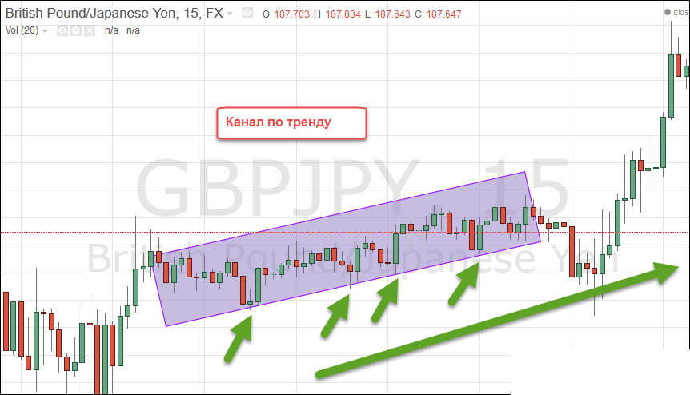
Две главных мысли о трендах, что вы встретите в книгах:
- тренд ваш друг;
- не работайте против тренда.
Поддержка и сопротивление
После тренда и каналов следующий важный вопрос – это линии (уровни) поддержки и сопротивления, сокращенно “п/с”. Это условные линии, от которых ранее цена “отскакивала”.
- Сопротивление – линия, что рисуется вверху. Она “сопротивляется”, не дает цене подняться.
- Поддержка – напротив, не дает цене упасть ниже и “поддерживает” ее.
Почему? Это вопрос психологии, а также баланса спроса и предложения. Нет желающих покупать по столь дорогой цене? Значит выше определенного уровня цена не поднимается. До поры, до времени. Пока не придет покупатель, который насмотрелся позитивных новостей и стал покупать и еще раз покупать. Результат? Цена стремится вверх.
Если же цена уверенно “пробила” линию – значит психология рынка изменилась, это пробой. И вскоре рынок нащупает новую поддержку и новое сопротивление.
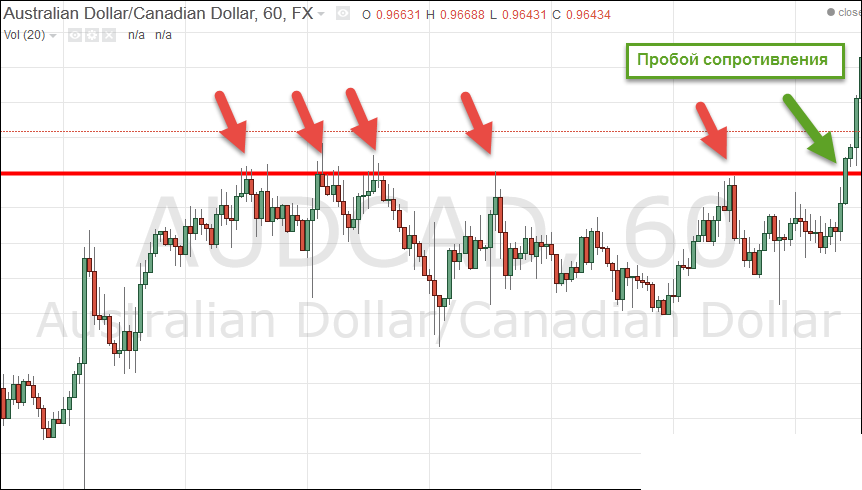
Магия круглых чисел
О психологии, что скрывается за этими линиями, можно судить и по тому, насколько часто эти линии формируются на круглых числах, таких как 10, 20, 35, 50 и особенно 100. Эти психологические уровни вновь и вновь вынуждают трейдеров покупать и продавать.
Скажем, цена акции 120 долларов, она падает и приближается к 100 долларам. Многие трейдеры начинают покупать, несмотря на падение, будучи в уверенности, что цена не сможет пробить столь важный психологический барьер с цифрой 100. Так часто и происходит.
В результате, цена доходит до ровной цифры и “отскакивает” от нее, будучи не в силах с ней справиться. Так срабатывает линия поддержки, что словно “поддерживает” цену снизу.
Справедлива и обратная картина, когда цена растет, доходит до 100 и отскакивает вниз. Так сработала линия сопротивления, что “сопротивляется” и не дает цене продвинуться дальше.
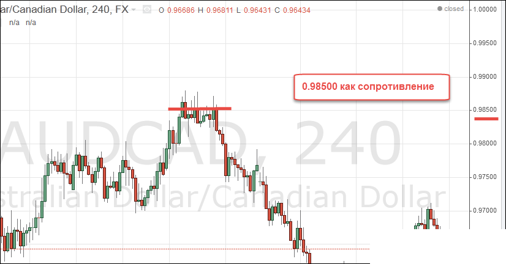
Смена ролей
Рано или поздно, уровень поддержки или сопротивления будет пробит. Цене неизбежно хватит на это сил. Тогда их роли меняются. То что было сопротивлением станет поддержкой и наоборот.
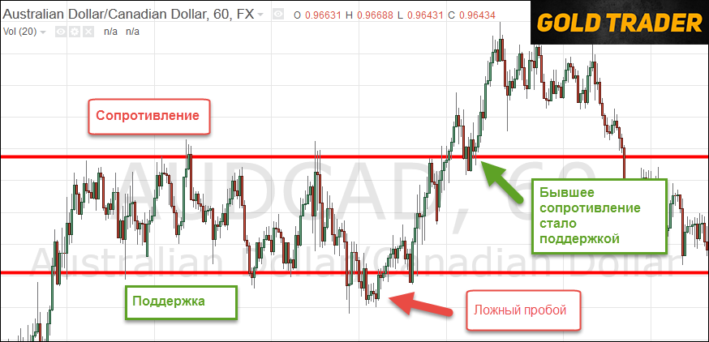
У любой цены всегда есть свой уровень поддержки и сопротивления. Иногда происходит так называемый “ложный пробой”, когда цена постаралась пробить п/с, но у нее не получилось.
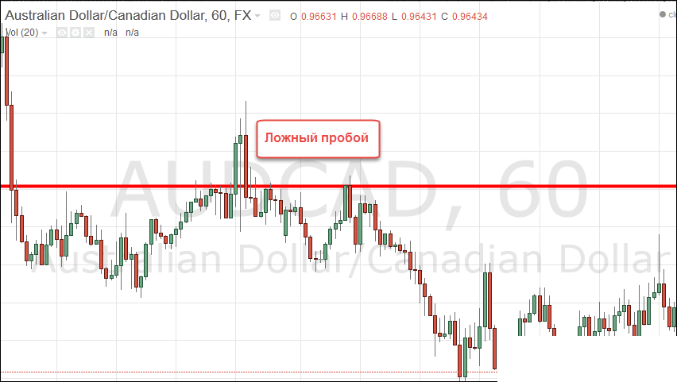
Многие трейдеры торгуют только по линиям поддержки и сопротивления. Это важнейшая концепция технического анализа, может даже и самая важная. Чем чаще цена отскакивает от определенного ценового уровня, тем он надежнее, особенно на старших фреймах.
Однако, пробой линии рано или поздно состоится – поэтому не ждите, что цена вечно будет отскакивать от линий, словно мячик.
Кроме того, важные новости дают рынку такой импульс, что пробивает даже самую надежную п/с. Поэтому вы должны быть постоянно в курсе основных экономических новостей. Даже для того, чтобы не торговать в момент объявления, скажем, экономических показателей (те самые “3-головые” новости).
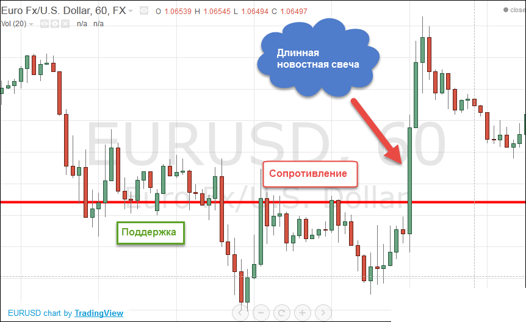
Канал поддержки и сопротивления
Ошибкой будет, в том числе, всегда ждать точный отскок. Обычно цена болтается около линий поддержки и сопротивления в небольшом канале. Вот почему нередко вместо линий чертят канал, который охватывает тени свечей, что “щупали” линию, но не смогли ее пробить.
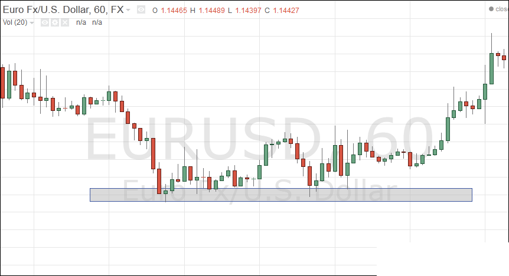
Ориентируясь на такой канал, проще понять, где лучше войти на отскоке в бинарных опционах и с какой экспирацией.
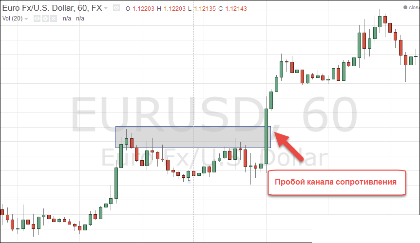
Объемы
Многие, начитавшись книг про технический анализ, начинают искать на графиках объемы и переживают по их поводу. В действительности, объемы играют роль лишь для акций, индексов и фьючерсов – но не для валютных пар рынка spot (который мы и видим на графиках). Поскольку Форекс – это нерегулируемый межбанк, точных данных по объемам не существует в принципе.
Именно поэтому на живом графике индикатор объема Volume, что включен по умолчанию, не показывает объемы для EUR/USD и прочих.
Зато показывает для акций, скажем, вот объемы торгов акций Apple.
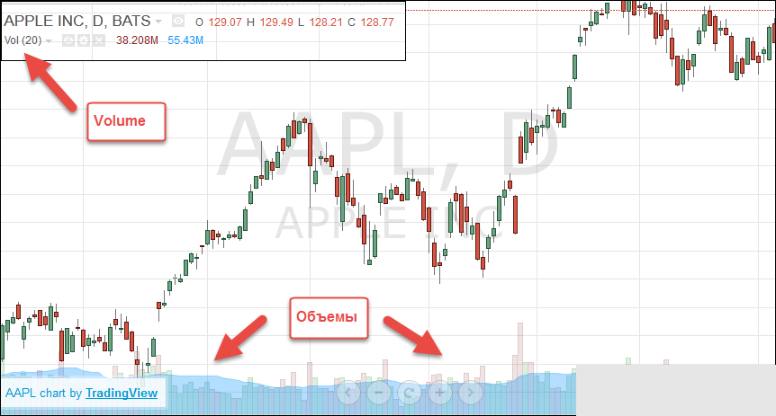
Тем не менее, аналитическая компания IDC дает свои (примерные) данные по объемам торгов, и благодаря TradingView мы можем ими вполне воспользоваться.
Для этого нужно выбрать котировку forex – IDC:
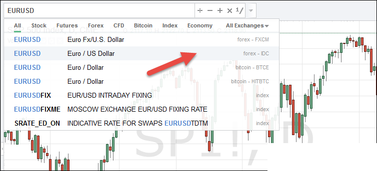
И результат для евро/доллара. Эти данные – приблизительные, но дают неплохую общую картину.
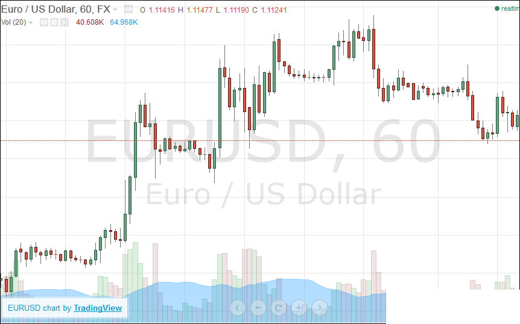
Как читать объемы у TradingView
Это обычная гистограмма. Каждый столбик указывает на объем, а его цвет, для удобства, дублирует цвет свечи.
Наконец, синяя область – это средняя скользящая 20, которая позволяет лучше видеть тренд в объемах. Изменить это значение можно в параметрах индикатора Volume.
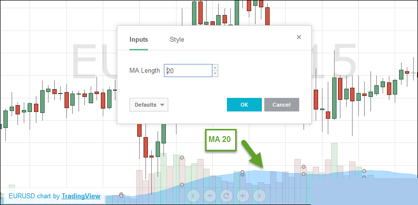
Другие источники объемов
Также данные по объемам можно подсмотреть крупных брокеровов форекса. Это статистика по торгам их клиентов. Скажем, вот так выглядят данные по объемам торгов от Oanda.
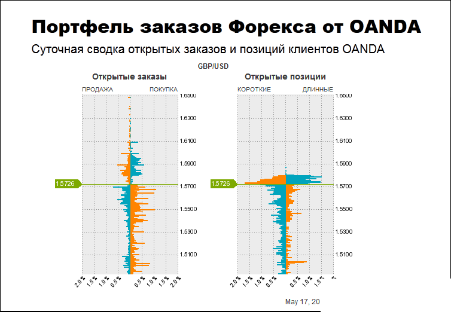
Еще один источник – фьючерсные валютные контракты на бирже CME.
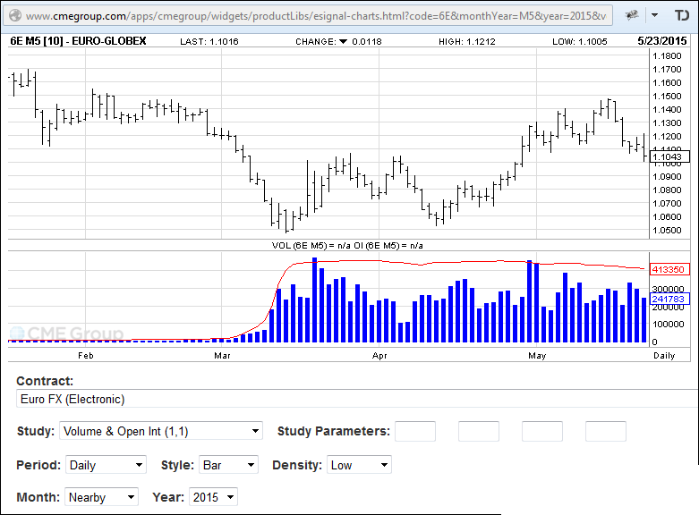
Как правило, работа с объемами подразумевает использование гистограмм. Чем выше столбик объема, тем нам интереснее. Вообще, объемы – это отдельный и весьма большой подраздел технического анализа. Некоторые торгуют только по объемам и тратят на изучение всех аспектов этого непростого дела много месяцев.
Объемы используются для подтверждения трендов и различных фигур разворота. При этом движение цены, что сопровождается большим объемом, считается более достоверным и сильным, нежели движение с объемом малым.
Это помогает нередко понять, ложный ли это пробой или нет, действительно ли цена развернулась либо это ложный разворот.
- Чем больше объем – тем сильнее импульс, с которым движется цена.
- Чем меньше объем – тем движение цены слабее и вскоре может завершиться.
Дивергенция по объемам
Дивергенция – это расхождение в показателях двух индикаторов или сигналов. Если тренд идет вверх, а объемы неуклонно падают – это пример классической дивергенции.
Объемы и фигуры
Голова и плечи, треугольники, флаги и прочие фигуры нередко подтверждают именно объемами. У таких фигур есть точка, где должен произойти разворот цены. И если она сопровождается всплеском объема – это добавляет уверенности в развороте.
Вот так с объемами и работают. Объемы растут – значит тренд укрепляется. Падает – напротив, он слабеет.
В целом, объемный (кластерный) анализ – это сложная, профессиональная тема. Она весьма актуальна на биржах фьючеров и опционов. Именно там применяются возможности кластерного анализа в терминалах NinjaTrader, Volfix, ATAS и прочее.
Кластерный анализ в программе VolFix. Да-да, страшный профессиональный график. Но все, что он показывает – лишь объемы торгов.
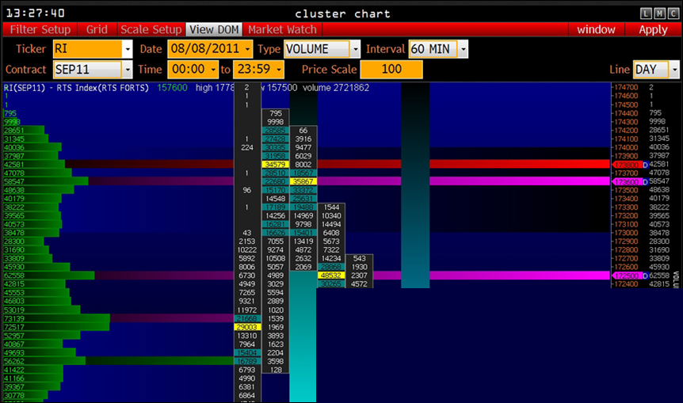
В бинарных же опционах, где в основном работают с валютными парами, объемы мало применяются, ибо по ним попросту нет исчерпывающих данных.
Виды графиков
График – это наше все. Именно на нем мы наблюдаем изменение цены и делаем наши прогнозы. Новички часто пытаются работать по графикам брокеров бинарных опционов, безусловно можно и нужно смотреть, анализировать графики у брокера, но важно понимать что никакой брокер не предоставляет вам идеальный график.
Именно поэтому надо использовать нормальные графики и терминалы. Лично я использую и живой график на сайте, и его полную версию на сайте TradingView.
Движение цены отображается различными видами графиков, основные из них всего 3:
- свечной;
- линейный;
- бары.
Свечной график
Свечной график придумал мрачный японец с картинки в начале этой статьи. Свеча – это очень эффективный индикатор, что показывает выбранный период времени, за который двигалась цена.
Структура свечи выглядит вот так:
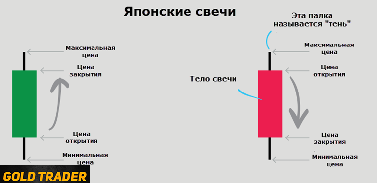
Свечной анализ
Раз свеча – это индикатор, значит, она должна показывать нечто большее, нежели просто движение цены за таймфрейм. Так и есть. Именно поэтому существует такая дисциплина, как свечной анализ.
В ней на протяжении десятилетий изучали виды свечей и их комбинации, что позволяют судить об изменении характера движении цены.
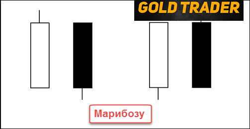
Используются как сами свечи определенной формы, так и их комбинации.
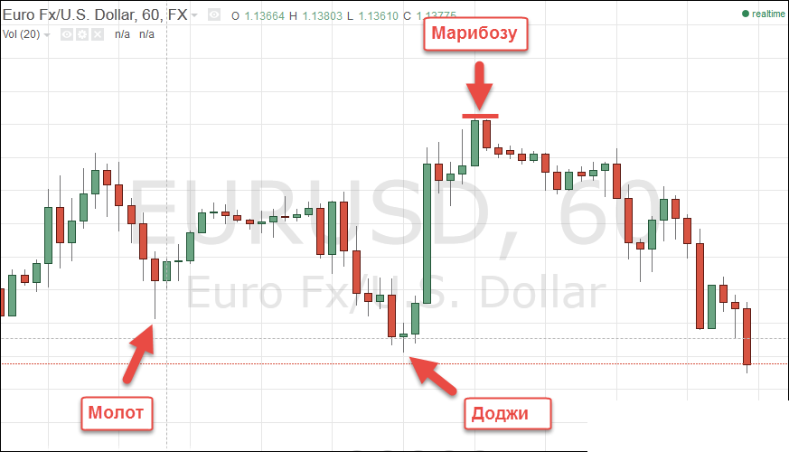
Пинбары:
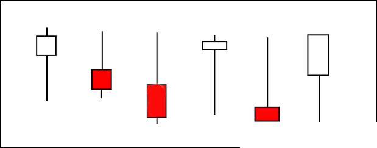
Свечная комбинация “медвежье поглощение”:
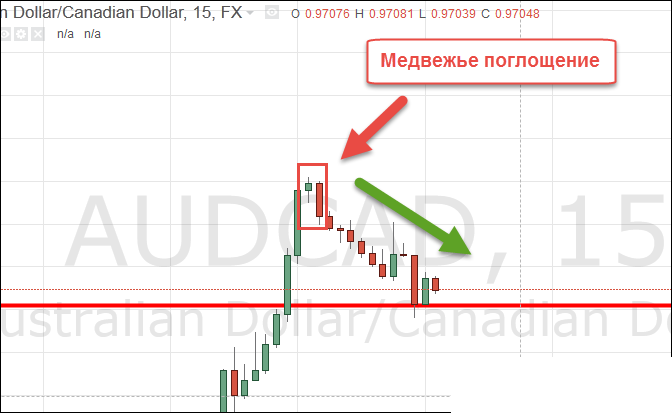
Свечных комбинаций – сотни. Зубрить их не нужно. На практике, созерцая график, необходимо выбрать несколько комбинаций, что привлекли ваше внимание, и научиться находить их в разных условиях и на любых таймфреймах.
Прайс экшн
Свечных комбинаций колоссальное количество. Только в книгах Нисона их несколько сотен. Однако, вот какое дело. Все эти книги, будучи классикой теханализа, писались порой несколько десятков лет назад.
Вот только рынки с тех сильно изменились. Сейчас 70% торгов, что мы видим на графиках, осуществляют высокочастотные роботы. Миллионы трейдеров торгуют из дома, не вставая с кресел.
Именно поэтому все более актуальным становится прайс экшн (price action). Это – ультрасовременный свечной анализ для быстрых рынков 21 века.
Известные западные трейдеры, такие как Ланс Бегс, Нил Фуллер, James16 и многие другие разработали свои системы прайс экшн, к изучению которых стоит перейти только после того, как вы изучили основы технического/фундаментального анализа.
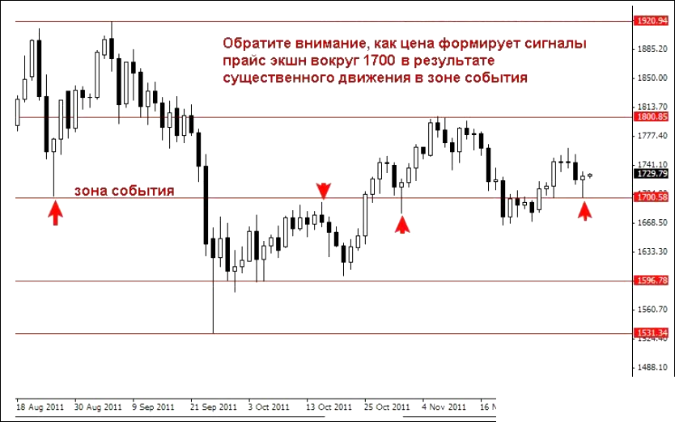
Линейный график
Линейный – самый простой график, просто линия, что позволяет быстро определить направление движения цены. Линия формируется методом объединения цен закрытия за выбранный таймфрейм.
В результате, на линейном нельзя увидеть наивысшую цену за выбранный период времени (таймфрейм) или же цену открытия. Впрочем, цена закрытия считается более важным показателем.
Линейный график пригоден разве что для быстрого определения тренда
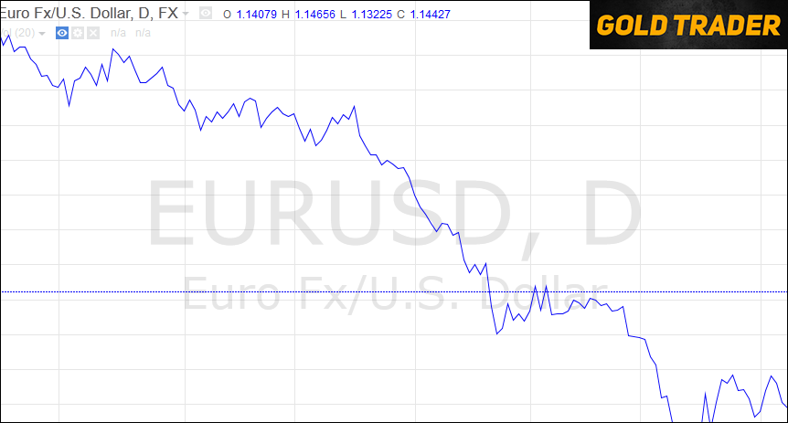
Бары
Бары любят западные трейдеры, и многие стратегии ориентированы именно на их использование. Принцип такой же, как у свечей, но другой метод визуализации. Мы видим цены открытия и закрытия, максимальную и минимальную цену за выбранный таймфрейм.
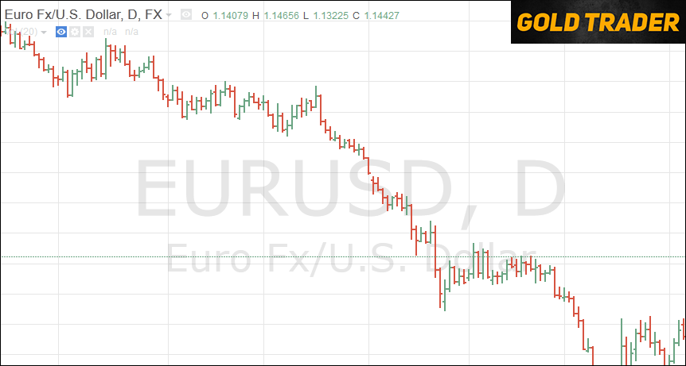
В общем и целом, не суть важно, что применять – главное, чтобы это помогало в ваших прогнозах.
Самым популярным является, естественно, свечной график. Что же касается экзотических графиков, типа Ренко, Каги или “крестики нолики” — они весьма редки и используются фондовиками со стажем.
Остались вопросы? Напиши мне лично — Влад
Читать дальше Технический анализ — Часть 2 →